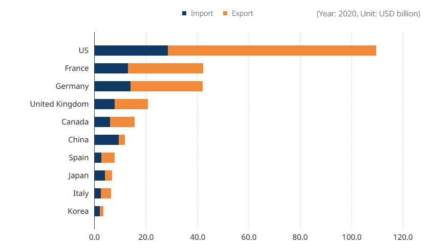
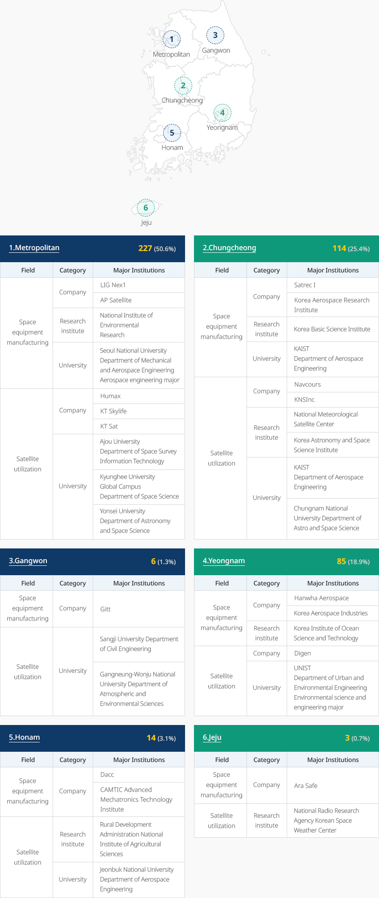

Aerospace
- Home
- Why KOREA
- Industry
- Aerospace
-
Korea Focuses on Securing Technology For a Bigger Leap Forward CloseKorea Focuses on Securing Technology For a Bigger Leap ForwardThe COVID-19 pandemic triggered economic uncertainty and social changes around the world.
Due to restrictions on international movement and significant shut-downs,
the trade volume of major countries in 2020 showed a negative growth of 35% compared to 2019.
Korea showed a growth rate of -37%, which was below the average,
but its decline was slower compared to China (-49%), Japan (-44%), or France (-43%)"Trade Volume of the Aerospace Industry by Country"(Year: 2020, Unit: USD billion)- USA
- France
- Germany
- United Kingdom
- Canada
- China
- Spain
- Japan
- Italy
- Repulic of Korea
 ※ Source: UN ComtradeThe comparison of the core technology level among major countries in 2020 showed that,
※ Source: UN ComtradeThe comparison of the core technology level among major countries in 2020 showed that,
compared with the US (100%) which has the highest technology level, Korea’s technology level
averaged 64.3%, an increase of 3.4%p from 2018.- Manned/Unmanned integrated autonomous vehicle technology: From 70.0% in 2018 to 80.0% in 2020 (10%p increase)
- Manned/Unmanned autonomous vehicle integrated control system technology: From 65.0% in 2018 to 70.0% in 2020 (5%p increase)
Although the trade volume is smaller than that of other major countries, Korea focuses on investing in and
securing technology (40% of the total investment). Consequently, the technology gap is relatively low,
compared to the trade volume gap (about 3.5% of that of the US)."Major Aerospace Industries in Korea"Comparison of Technology Levels by Sector in Major Countries (Year: 2020, Unit: %)- Space launch vehicle development and operation
- Space environment observation monitoring, analysis technology
- Space exploration and application technology
- Manned/Unmanned integrated autonomous vehicle technology
- Manned/Unmanned autonomous vehicle integrated control system technology
※ Source: KISTEP 2020 Technology Level Evaluation"Investment by Private Companies in the Aerospace Industry"(Unit: KRW 100 million)Investment in Aerospace Industry by Private Companies Category, Years Category 2017 2018 2019 Aviation R&D 147,199(37%) 196,194(36%) 184,875(35%) Facility/Equipment 106,593 174,995 179,876 Land/Building 88,724 69,839 137,570 Others 51,296 100,586 28,698 Subtotal 393,812 541,614 531,019 Space R&D 163,072(89%) 151,576(84%) 133,760(50%) Facility/Equipment 17,082 27,422 133,047 Education Training 1,196 1,046 1,552 Others 863 21 - Subtotal 182,212 180,065 268,359 Total 310,271 347,770 799,378 ※ Source: Survey on the Aerospace Industry, Korea Aerospace Industries Association (2020)The R&D investment by private companies in the aviation industry in 2019 amounted to
KRW 18.5 billion (35% of total investment), recording large-scale investment of over 30% for several years.
Through continuous investment of over 20% in facility/equipment, they focused on technology and
facility/equipment development.The test launch of Nuri, a launch vehicle developed with Korean technology, failed to settle in orbit (October 21, 2021),
but reached the target altitude. Korea has acquired related generic technology,
such as 75-ton liquid engine and pairing separation technology.Securing self-launching capability means preparing a foothold to advance a new space era for the pace field.
A total of 300 companies participated in the actual development of Nuri.The market is expected to be vitalized in accordance with the government policy for private-led space development,
for example, creating an ecosystem for launching service. -
The Aerospace Industry of Korea Creates High Added-Value OpenKorea’s Aerospace Industry Creates High Added-ValueThe Korean aerospace industry has been continuously growing since 2017.
Its production stood at approximately USD 6 billion in 2019, which is a 28% increase year-on-year.
Its exports reached approximately USD 2.8 billion, which is an 8% increase year-on-year.
It is analyzed that both production and exports increased compared to the previous year in the fields
of aircraft, engine parts, space, and unmanned vehicles.Korean Aerospace Industry Trend Category, Years(2010 ~ 2018) ※ Note 1: Production and domestic demand are the performance of Korean aviation manufacturers. (KAI, Korean Air, Hanwha Aerospace, etc.)
※ Note 2: Imports are based on MTI statistics. Exports are P/O and contract amounts.The number of aviation personnel was 16,637 in 2019, showing a steady increase through 2016 and
holding steady after 2017. The number of space experts reached 6,643 in 2019, demonstrating
a steep increase through 2017 but maintaining the trend after that year."Employment in the Aerospace Industry"Employment in the Aerospace Industry Category, Years Category 2014 2015 2016 2017 2018 2019 Aviation No. of employees 14,318 14,777 15,986 16,859 16,911 16,637 Growth Rate - 5.0%p 9.0%p 1.0%p 4.0%p -1.6%p Space No. of employees 4,257 5,456 5,988 6,708 6,610 6,643 Growth Rate - 28.0%p 10.0%p 12.0%p -1.0%p 0.5%p ※ Source: Industrial Statistical System, Space Industry Survey (2020) -
Global Aerospace Companies Securing a Base in Korea OpenGlobal Aerospace Companies Securing a Base in KoreaUS-based Boeing established the world’s largest Boeing Korea Engineering and Technology Research Center
(BKETC) in Seoul. The BKETC will recruit and hire experts in autonomous flight, artificial intelligence, avionics,
mobility platforms, smart cabins, and smart factories to study next-generation aerospace technologies.
Boeing and Korean Air opened an aviation training center in Yeongjong District inside
the Incheon Free Economic Zone as a joint venture. IAT, a joint venture between Korean Air and
UTC of the US, established an engine test cell in Yeongjong District inside the Incheon Free Economic Zone
and is performing aircraft engine tests (B777, etc.)"Major Global Aerospace Companies in Korea"
-
Commercialization of K-UAM Expands Opportunities to Enter the Aerospace Industry OpenCommercialization of K-UAM Expands Opportunities to Enter the Aerospace IndustryThe Ministry of Trade, Industry and Energy announced Basic Plans for
the Aviation Industry Development (2021-2030) in March 2021, which propose directions and
policy tasks for more efficient and systematic policies for aviation industry development.- Infrastructure - Improve infrastructure to overcome industrial crises
- Conventional Aviation - Reinforce market competitiveness and advance parts industry
- Future Aviation - Create a UAM/AAM ecosystem and promote industrial convergence
- R&D - Contribute to industrial development through the development of advanced aviation technology
The Ministry of Land, Infrastructure and Transport has forecast the future (through 2045) for each field,
including elements such as society, technology, economy, environment, and politics.
The ministry has set four future visions for the government and proposed policy implications.- Creativity & Innovation - Realize safe daily life without driving through universalization of PAV, an autonomous means of transportation
- Clean & Safety - Establish an eco-friendly and accident-free transportation system through commercialization of high-efficiency, low-carbon air transport means, such as vertical take-off and landing tilt rotor and PAV
- Integration & Coexistence - Realize unobstructed traffic through commercialization of door-to-door service cargo and air transport
- Emotion & Fun - Diversify and generalize mobility through development of a non-transfer transport system that combines driving, flying, and underwater movement
UAM Team Korea published K-UAM Concept of Operations 1.0 and
presented a milestone in innovative UAM development."Main Indicators of K-UAM Development"Main Indicators of K-UAM Development Item, Early Stage(2025), Growth Stage(2030~), Maturity Stage(2035~) Item Early Stage(2025) Growth Stage(2030~) Maturity Stage(2035~) Captain On Board Introduce remote Introduce autonomous Traffic management system Step-by-step expansion of the role of UAM traffic management service provider; step-by-step reduction of the participation of air traffic controllers Traffic management automation Introduce automation Automation driven and human surveillance Complete automation Corridor operation Fixed Corridor Fixed Corridor Network Dynamic Corridor Network Aviation network Commercial mobile communication (4G, 5G), aviation voice communication Commercial mobile communication (5G, 6G), low-orbit satellite communication, C2 LINK, etc. Navigation system Precision satellite navigation Precision satellite navigation + Image-based relative navigation Complex relative navigation Vertiport location and type Vertiport in the metropolitan area Vertiport in the metropolitan and wider area Nationwide -
Aerospace Clusters and Regional Distribution OpenAerospace Clusters and Regional DistributionThe aviation industry has a number of major companies and testing and evaluation
facilities located in the Gyeongnam region. A specialized complex for the aviation industry
has been established in Sacheon, where many key aviation companies, like KAI, are located.
An avionics MRO cluster has been established in Yeongcheon.A total of 449 institutions (companies, research institutes, and universities) participated in
the space industry as of 2019, mainly distributed in the metropolitan area and Chungcheong area (341, 75.9%).A total of 227 space-related companies, dealing with satellite and launch vehicles,
are located in the metropolitan area. Major satellite companies—like Setrec I--and the Korea Aerospace
Research Institute, have formed a base in Chungcheong province. Hanwha Aerospace,
the Korea Aerospace Industries, and other large space equipment manufacturers are located in the Yeongnam area."Major Companies and Infrastructure by Region"- Haemi: Test Evaluation Center(86 maintenance windows, flight test)
- Daejeon: Innopolis Daedeok(Aerospace Research Institute, Defense Science Research Institute, R&D centers of major companies, avionics specialized areas)
- Hoheung: Naro Space Center(Aircraft launch vehicle assembly, rocket launch facility, unmanned aerial vehicle flight tests)
- Changwon: Machinery Industrial Complex(Specialized complex for machinery and mechatronics Over 20 aviation companies )
- Busan: Gimhae Industrial Complex(Korean Air (Aerospace Division) Over 30 aviation companies )
- Sacheon: Specialized Industrial Complex for Aviation (Final aircraft assembly site, specialized for aircraft body, over 40 aviation companies, foreign-invested site)
※ Source: Korea Aerospace Industry Promotion Association"Major Aerospace Companies and Infrastructure by Region"-
Metropolitan 227(50.6%)
Major Aerospace Companies and Infrastructure by Region(Metropolitan) Field, Category, Major Institutions Field Category Major Institutions Space equipment manufacturing Company LIG Nex1 AP Satellite Research institute National Institute of Environmental Research University Seoul National University Department of Mechanical and Aerospace Engineering Aerospace engineering major Satellite utilization Company Humax KT Skylife KT Sat University Ajou University Department of Space Survey Information Technology Kyunghee University Global Campus Department of Space Science Yonsei University Department of Astronomy and Space Science -
Gangwon 6(1.3%)
Major Aerospace Companies and Infrastructure by Region(Gangwon) Field, Category, Major Institutions Field Category Major Institutions Satellite utilization Company Gitt Space utilization University Sangji University Department of Civil Engineering Gangneung-Wonju National University Department of Atmospheric and Environmental Sciences -
Chungcheong 114(25.4%)
Major Aerospace Companies and Infrastructure by Region(Chungcheong) Field, Category, Major Institutions Field Category Major Institutions Space equipment manufacturing Company Satrec I Korea Aerospace Research Institute Research institute Korea Basic Science Institute University KAIST Department of Aerospace Engineering Space utilization Company Navcours KNSInc Research institute National Meteorological Satellite Center Korea Astronomy and Space Science Institute University KAIST Department of Aerospace Engineering Chungnam National University Department of Astro and Space Science -
Yeongnam 85(18.9%)
Major Aerospace Companies and Infrastructure by Region(Yeongnam) Field, Category, Major Institutions Space equipment manufacturing Company Hanwha Aerospace Korea Aerospace Industries Research institute Korea Institute of Ocean Science and Technology Satellite utilization Company Digen University UNIST Department of Urban and Environmental Engineering Environmental science and engineering major -
Honam 14(3.1%)
Major Aerospace Companies and Infrastructure by Region(Honam) Field, Category, Major Institutions Field Category Major Institutions Space equipment manufacturing Company Dacc CAMTIC Advanced Mechatronics Technology Institute Space utilization Research institute Rural Development Administration National Institute of Agricultural Sciences University Jeonbuk National University Department of Aerospace Engineering -
Jeju 2(0.6%)
Major Aerospace Companies and Infrastructure by Region(Jeju) Field, Category, Major Institutions Field Category Major Institutions Satellite utilization Company Ara Safe Space utilization Research institute National Radio Research Agency Korean Space Weather Center
※ Source: Space industry survey (2020)
※ Data also provided by: Korea Aerospace Research Institute


Invest KOREA
Aerospace PM
Chung Bo Young
Key Industries Promotion Team
T.+82-2-3460-7888
Recommendation on Locations
Industrial complex information
[Gyeongsangnam-do Sacheon City] Sacheon 1st General Industrial
Complex
Click [Go to Detailed Information] to go to the relevant information screen of
Smart K-Factory service of Industrial Complex Corporation.
-
Complex nameSacheon 1st General Industrial Complex
-
Initial designation date1991.12.28
-
Designated area(m2)2,545,259
-
ManagementGyeongsangnam-do Sacheon City, Korea Industrial Complex Corporation
-
Nearby RailwayJinju Station
-
Distance from station(km)14
-
Nearby AirportSacheon Airport
-
Distance from airport(km)5
-
Industrial water Supply capacity(ton/day)11000(㎥/day)
-
Affiliation local governmentGyeongsangnam-do Sacheon City
-
Population111,440
Industrial complex information
[Gyeongsangbuk-do Yeongcheon City] Gokyong General Industrial
Complex
Click [Go to Detailed Information] to go to the relevant information screen of
Smart K-Factory service of Industrial Complex Corporation.
-
Complex nameGokyong General Industrial Complex
-
Initial designation date2009.12.24
-
Designated area(m2)1,565,077
-
ManagementGyeongsangbuk-do Yeongcheon City
-
Nearby RailwayYeongcheon Station
-
Distance from station(km)10
-
Nearby AirportDaegu International Airport
-
Distance from airport(km)52
-
Industrial water Supply capacity(ton/day)2053(㎥/day)
-
Affiliation local governmentGyeongsangbuk-do Yeongcheon City
-
Population101,523
Industrial complex information
[Busan Metropolitan City Gijang County] Jeonggwan Agricultural Industrial
Complex
Click [Go to Detailed Information] to go to the relevant information screen of
Smart K-Factory service of Industrial Complex Corporation.
-
Complex nameJeonggwan Agricultural Industrial Complex
-
Initial designation date1987.02.25
-
Designated area(m2)258,083
-
ManagementBusan Metropolitan City Gijang County
-
Nearby RailwayBusan Station
-
Distance from station(km)31
-
Nearby AirportGimhae International Airport
-
Distance from airport(km)35
-
Industrial water Supply capacity(ton/day)400(㎥/day)
-
Affiliation local governmentBusan Metropolitan City Gijang County
-
Population172,288
Industrial complex information
[Gyeongsangnam-do Miryang City] Sapo General Industrial Complex
Click [Go to Detailed Information] to go to the relevant information screen of
Smart K-Factory service of Industrial Complex Corporation.
-
Complex nameSapo General Industrial Complex
-
Initial designation date2004.12.16
-
Designated area(m2)745,994
-
ManagementGyeongsangnam-do Miryang City
-
Nearby RailwayMiryang Station
-
Distance from station(km)4
-
Nearby AirportGimhae International Airport
-
Distance from airport(km)51
-
Industrial water Supply capacity(ton/day)1996(㎥/day)
-
Affiliation local governmentGyeongsangnam-do Miryang City
-
Population105,026
Industrial complex information
[Gyeongsangnam-do Goseong County] Madong Agricultural Industrial Complex
Click [Go to Detailed Information] to go to the relevant information screen of
Smart K-Factory service of Industrial Complex Corporation.
-
Complex nameMadong Agricultural Industrial Complex
-
Initial designation date2007.08.06
-
Designated area(m2)287,799
-
ManagementGyeongsangnam-do Goseong County
-
Nearby RailwayMasan Station
-
Distance from station(km)47
-
Nearby AirportSacheon Airport
-
Distance from airport(km)38
-
Industrial water Supply capacity(ton/day)-
-
Affiliation local governmentGyeongsangnam-do Goseong County
-
Population26,867
Industrial complex information
[Gyeongsangnam-do Sacheon City] Duryang Specialized Agricultural Industrial
Complex
Click [Go to Detailed Information] to go to the relevant information screen of
Smart K-Factory service of Industrial Complex Corporation.
-
Complex nameDuryang Specialized Agricultural Industrial Complex
-
Initial designation date2004.06.10
-
Designated area(m2)118,161
-
ManagementGyeongsangnam-do Sacheon City
-
Nearby RailwayJinju Station
-
Distance from station(km)9
-
Nearby AirportSacheon Airport
-
Distance from airport(km)5
-
Industrial water Supply capacity(ton/day)-
-
Affiliation local governmentGyeongsangnam-do Sacheon City
-
Population111,401